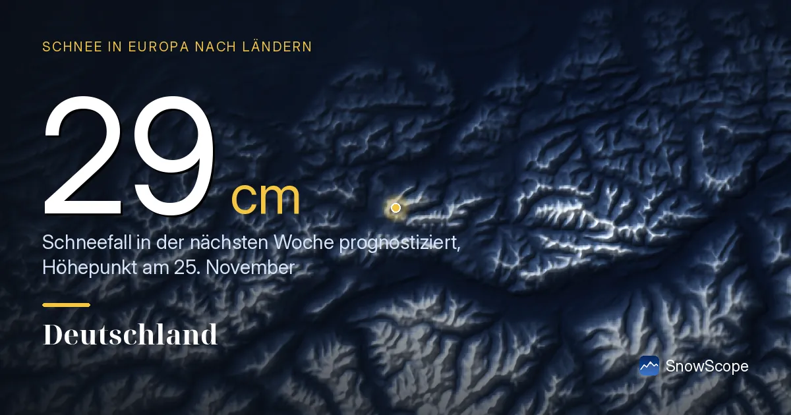

Deutschland: 29 cm Schneefall in der nächsten Woche prognostiziert, Höhepunkt am 25. November
Ein erhebliches Schneeereignis baut sich in den nächsten Tagen in den deutschen Bergen auf. Die stärksten Fälle kommen um den 25. November, wenn Prognosen 13 cm an einem einzelnen Tag in Teilen der Bayerischen und Allgäuer Alpen andeuten.
Die Live-Schneeprognose für Zugspitze in der SnowScope-AppSchneehöhen, Pulverschnee-Alarme und 3D-Karte, gratis.
Was die nächsten sieben Tage bringen
Die Wetterlage, die sich nach Deutschland verschiebt, unterscheidet sich stark von der dünnen Schneedecke der vergangenen Wochen.
Diese Prognose hat vernünftige Zuverlässigkeit, auch wenn Bergwetter sich verschieben kann. Für Skifahrer ist wichtig, dass die stärksten Niederschläge sich in ein enges Zeitfenster konzentrieren, statt sich dünn über viele Tage zu verteilen. Der Sturm baut sich allmählich auf: Erwarte leichtere Fälle ab dem 19. November, dann Intensivierung zum 25. November hin.
| Skigebiet | Schneehöhe | Neuschnee, 72 h | Erwartet, nächste Tage | Gipfel |
|---|---|---|---|---|
| Zugspitze | 43 cm | 15 cm | 20 cm | 2.627 m |
| Garmisch-Classic | 25 cm | 12 cm | 14 cm | 2.047 m |
| Fellhorn/Kanzelwand | 20 cm | 17 cm | 32 cm | 1.965 m |
| Wendelstein | 20 cm | 2 cm | 14 cm | 1.718 m |
| Oberer Maxlraineralm | 19 cm | 5 cm | 17 cm | 1.597 m |

Wo der Schnee fällt: Höhenlage und Gelände
Schnee wird nicht in allen Höhenlagen gleichmäßig fallen. Unter 1.500 m bleibt das Bild fleckig. Die Schneegrenze liegt derzeit um 1.300 m, und während Niederschläge auch in tiefere Lagen fallen, wird vieles am Boden nicht bestehen bleiben.
Für Skigebiete bedeutet das: Die höchsten Gipfel gewinnen am meisten. Die Zugspitze, Deutschlands Höhepunkt mit 2.627 m, hat bereits 43 cm aus jüngsten Stürmen und wird in den nächsten drei Tagen etwa 20 cm dazubekommen. Fellhorn/Kanzelwand, tiefer auf 1.965 m gelegen, hat heute 20 cm, aber bekommt großzügigere Mengen in Zukunft, Prognosen deuten auf 32 cm in diesem Drei-Tage-Fenster. Die niedrigeren Berge – Wendelstein mit 1.718 m und Oberer Maxlraineralm mit 1.597 m – werden Zuwächse sehen, aber Schneeerhalt wird unter 1.500 m unsicher.
Das regionale Bild: Wer führt jetzt
Die Allgäuer Alpen verdienen heute Aufmerksamkeit. Diese Berge bekamen in den vergangenen 72 Stunden 19 cm Neuschnee, fast das Doppelte von anderswo. Die Bayerischen Alpen folgen mit 15 cm in demselben Zeitraum. Das Erzgebirge hingegen sah nur 4 cm, was zeigt, wie ungleichmäßig Bergschnee sich in Übergangsjahreszeiten verteilt.
Die Zugspitze hat die tiefste gemessene Schneedecke im Land mit 43 cm, obwohl dies 50 Prozent unter ihrem typischen Ende-November-Mittel von 20 cm liegt – ein Reminder, dass Frühjahrsschnee knapp bleibt. Nur 45 von Deutschlands 232 Skigebieten melden derzeit Schnee an ihren Messstellen; die meisten Hänge haben noch keine sichere Basis. Die kommende Woche sollte diese Zahl deutlich vergrößern, wenn die Prognose stimmt.
Was wir sehen versus was wir modellieren
Der gemessene Schnee an Resorts erzählt eine Geschichte; unsere flächendeckenden Schätzungen über die 46.000 Quadratkilometer, die wir überwachen, erzählen eine andere. Heute melden 1.510 Quadratkilometer Bedeckung. Das Wachstum ist bescheiden, aber stetig – ein Zeichen, dass Höhenlagen über der Schneegrenze eine Grundlage aufbauen. Vor sieben Tagen maßen wir 1.700 Quadratkilometer, haben also in diesem Intervall Terrain verloren, da die warme Phase, die Anfang November dominierte, an niedrigeren Höhenlagen weiter zehrt.
Der einziehende Sturm sollte dieses Defizit entscheidend umkehren. Anfang Dezember sollte – wenn Prognosen stimmen – die weiße Fläche deutlich wachsen, besonders über 1.500 m, wo die Temperaturen andauernde Akkumulation bevorzugen.
Blick in die Zukunft
Über den Höhepunkt um den 25. November hinaus deuten unsere Aussichten für die zweite Woche (26. November bis 2. Dezember) auf fortgesetzte Aktivität hin. Dies deutet an, dass die Wetterlage unruhig und feuchtig bleibt, obwohl die Zuverlässigkeit in dieser Ferne abnimmt. Was sicher erscheint, ist dass Ende November sich als echter Schneeseason-Neustart formt.
Vor Ort: Eine Feldperspektive
Frühjahrsschnee in deutschen Bergen trägt immer Vorbehalte. Selbst die 29 cm, die kommende Woche eintreffen, liegen auf dünner Basis, und Felsbrocken werden durchstechen, wo Bedeckung flach bleibt. In Höhenlagen unter 1.500 m werden Steine wahrscheinlich nach dem Sturm sichtbar bleiben. Die Übergangszone zwischen 1.300 und 1.500 m verhält sich unvorhersehbar – manche Täler speichern Kälte und bewahren Schnee; andere drainieren Wärme und spülen ihn weg. Skifahrer sollten lokale Bedingungen genau checken und mit variierender Qualität rechnen.
Tipps für Skifahrer
- Beobachte die Allgäuer Alpen und Bayerischen Alpen ab dem 25. November.
- Bevorzuge Höhenlagen über 1.500 m für die zuverlässigste Bedeckung. Unter dieser Höhe verdünnt sich Frühjahrsschnee oft oder verschwindet; schau das Gelände sorgfältig an, bevor du dich festlegst.
- Zugspitze und Garmisch-Classic werden die tiefsten Summen sehen und sollten bis Wochenenende die meisten fahrbaren Bedingungen bieten, obwohl Frühjahrsbedeckung immer dünne Stellen hat.
- Vor der Erkundung von Gelände abseits der Pisten, checke die offizielle Lawinenbulletin für die Region. Frühjahrsschnee an steilen Hängen kann unvorhersehbar abgehen.
- Frühjahrsbasen sind dünn. Steine und Vegetation können durch Neuschnee durchkommen, besonders an niedrigeren Hängen und südseitigen Aspekten.
Zu diesen Zahlen
Die Schneehöhen der Skigebiete sind der meiste Schnee in den oberen Hängen am angegebenen Tag; es sind Schätzungen für eine Fläche, keine Messung an einem Punkt. Prognosen können sich ändern. Lies vor dem Freeriden immer den offiziellen Lawinenlagebericht.
Diesen Bericht zitieren
Für Forschung, Lehre oder Presse: Zahlen und Grafiken sind unter CC BY 4.0 mit dieser Quellenangabe frei nutzbar.
SnowScope (2026), Deutschland: 29 cm Schneefall in der nächsten Woche prognostiziert, Höhepunkt am 25. November, https://snowscope.app/blog/de/2026/11/germany-snow-on-the-way-18-november-2026.html, abgerufen am 2026-11-18
SnowScope (Atlas Labs). (2026, November 18). Deutschland: 29 cm Schneefall in der nächsten Woche prognostiziert, Höhepunkt am 25. November. SnowScope snow reports. https://snowscope.app/blog/de/2026/11/germany-snow-on-the-way-18-november-2026.html
BibTeX
@misc{snowscope2026germanysnowontheway18nov,
author = {{SnowScope (Atlas Labs)}},
title = {Deutschland: 29 cm Schneefall in der nächsten Woche prognostiziert, Höhepunkt am 25. November},
year = {2026},
month = nov,
howpublished = {\url{https://snowscope.app/blog/de/2026/11/germany-snow-on-the-way-18-november-2026.html}},
note = {Published 2026-11-18 13:56 UTC; accessed 2026-11-18}
}· CC BY 4.0 · Methoden, Daten und Werkzeuge →
Zugspitze: Schnee und Temperatur nach Höhe, dieser Winter vs letzter (Werkzeuge) →
Zugspitze folgen
Gratis: eine Nachricht, wenn Neuschnee kommt, und jeden Morgen die Vorhersage.
Weitere Schneeberichte

Zugspitze im Dezember: 122 cm auf 2627 m an einem typischen 15. Dezember, Tageskarte online 70,50 EUR; Garmisch-Classic darunter 69 EUR mit deutlich weniger Schnee.

Fellhorn/Kanzelwand im Dezember: 63 cm am Gipfel (1965 m) an einem typischen 15. Dezember, 10 cm im Tal; 6-Tage-Skipass im Advent 344,50 EUR bis 20. Dezember.